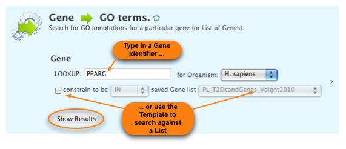

The Template search we just found takes a particular Gene as input and returns the GeneOntology (GO) annotation(s) of the Gene. We clicked on the title of the Template to show the Template search form.
![[Select Gene --> GO Template]](mmGeneGOtemplate_2.png)
Now you can run the Template search with the default value or restrict it to the Gene of your choice. You can enter any identifier and metabolicMine will try to find the right Gene. For example, for the H. sapiens Gene PPARG you can enter 'PPARG', 'PPARgamma', 'ENSG00000132170', 'GLM1' or any synonym. You can even enter a transcript (ENST00000397010) or Protein (PPARG_HUMAN) identifier and metabolicMine will convert it for you.
Click 'Show Results' to run this Template search with the default value:
